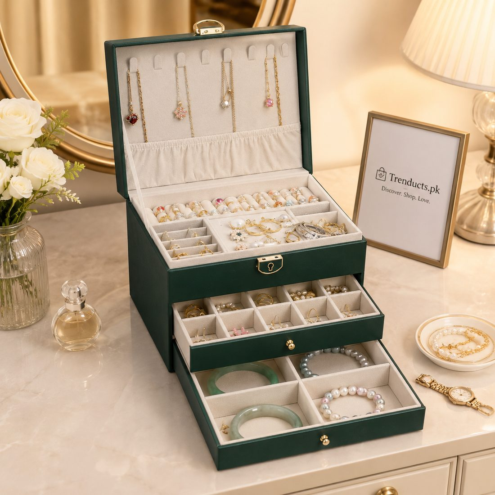
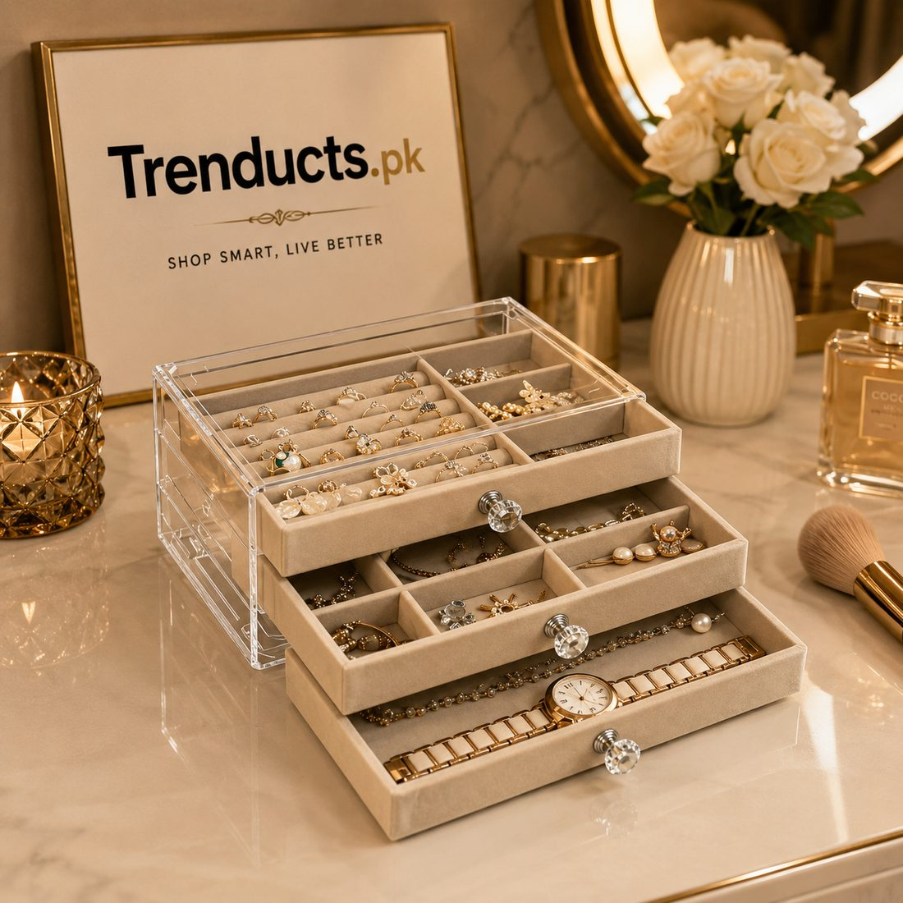
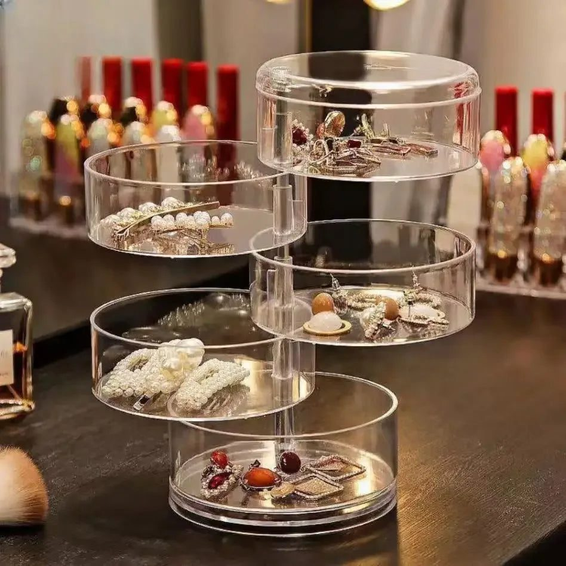

Wedding season in Pakistan means mehndi, baraat and walima, often across several weekends, and sometimes several weddings in one month. Each event brings a different outfit and a different set: jhumkay, tikka, bangles, kangan, chokers, rings and maybe a matha patti. By the second week, many dressing tables look like a jewellery shop after a busy sale. A simple organisation system keeps sets complete, protects delicate pieces and saves panic before leaving for the hall.
Sort before you store
Lay everything out on a bed covered with a clean sheet so small pieces do not roll away. Sort into groups:
- Bridal and heirloom pieces that are worn rarely and need the most protection
- Party sets for weddings and dawats
- Everyday jewellery such as studs, small rings and a simple chain
- Bangles and churiyan, grouped by colour or outfit
- Pieces that need repair, such as broken clasps or missing stones
Put the repair pile in a small labelled pouch and take it to a jeweller once the season calms down.
Keep sets together
The biggest frustration during wedding season is a set with one earring missing. Store each set in its own compartment or small box, with earrings, tikka and necklace together. Boxes with removable trays or multiple layers work well because each tray can hold a full set. If you buy jewellery with its own box, keep the box and label the outside so you know what is inside without opening it.

Prevent tangles
Chains and delicate necklaces tangle when they are thrown into one bowl. Hang them on hooks, lay them flat in long compartments or thread one end through a drinking straw before closing the clasp. Store long necklaces separately from earrings so hooks do not catch on chains.
Protect against tarnish
Silver and many artificial pieces darken over time when exposed to air and moisture. This is called tarnish, and humidity, perfumes and sweat speed it up. To slow it down:
- Put jewellery on after perfume, hairspray and makeup, not before
- Wipe pieces with a soft dry cloth after wearing to remove sweat and oils
- Store pieces in closed boxes or zip pouches rather than open dishes
- Keep jewellery away from the bathroom and from damp walls
- Add a small packet of silica gel to boxes in humid cities
Gold-plated and artificial pieces are especially delicate. Avoid water, and never use harsh cleaners on them.
Bangles deserve their own storage
Bangles break easily when they are pushed into a drawer. Use a bangle stand, a roll or a long box with dividers. Group them by colour so you can match outfits quickly. Glass churiyan are best kept in their original tube or wrapped in tissue.

Everyday pieces near the mirror
Pieces you wear daily, such as studs, a ring and a small chain, can live in a small tray or rotating box on the dressing table. Keeping them separate from heavy sets means you do not need to open the big box every morning.
Security for valuable pieces
Real gold and family heirlooms need more care than party jewellery. Many families keep them in a locker or a safe, and some use a bank locker. At home, a lockable jewellery box adds a basic layer of protection, though it is not a substitute for a proper safe. Keep a simple list and photos of valuable pieces in case you need them later.
Packing for events and travel
For weddings in another city, a travel jewellery case with padded sections keeps sets apart. Pack each event's jewellery in a separate labelled pouch: mehndi, baraat, walima. Keep the case in your hand luggage, not in the bag that goes in the boot or on the roof of the car.

A five-minute routine after each event
Coming home late from a baraat, it is tempting to drop everything on the dressing table. Instead, keep a small tray by the bed for that night only. The next morning, wipe each piece with a soft cloth, check that every earring has its back, and return the full set to its box. Five minutes after each event prevents the end-of-season hunt for missing pieces, and it is the moment you will notice a loose stone before it falls out.
After the season
Once the last walima is over, clean each piece gently, check for loose stones and broken clasps, and put everything back in its place before it goes into the cupboard. Next season, you will be glad you did.
Choosing an organizer
Think about the size of your collection, how often you travel and how much space you have. Layered boxes suit sets, rotating boxes suit everyday pieces, and clear acrylic drawers make it easy to see what you own. You can compare jewellery boxes and organizers in one place, or start from the main store at www.trenducts.pk for related dressing table storage.
Wedding season is meant to be enjoyed. With your sets complete, your chains untangled and your favourite pieces protected, getting ready becomes the fun part again.